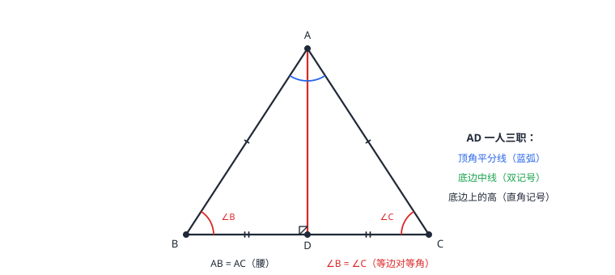

等腰三角形与等边三角形
等边对等角、等角对等边——边和角互相兑换的两台机器。顶角平分线、底边中线、底边上的高三线合一：一条辅助线同时顶三个身份。无图分类（腰底不明）先讨论再检验，是等腰计算题的第一反应。
| 所属主题 | 三角形 |
|---|---|
| 所属模块 | 几何 |
| 课标学段 | 第四学段（7~9 年级） |
| 前置知识 | 三角形的基本性质、全等三角形 |
| 核心素养 | 推理能力几何直观运算能力 |
教材定位
人民教育出版社《人教版（2024版）义务教育教科书·数学》
八年级上册第15章 轴对称15.3 等腰三角形
对应八上 15.3：等边对等角、等角对等边、三线合一与分类讨论。
说明
有两条边相等的三角形是等腰三角形：相等的两边是腰，另一边是底，两腰的夹角是顶角，腰与底的夹角是底角。它的两条核心互逆结论：等边对等角（性质——两腰相等则两个底角相等）；等角对等边（判定——两个角相等则它们的对边相等）。三条边都相等的三角形是等边三角形，每个内角都是 60°；判定有三条：三边相等；三角相等；是等腰三角形且有一个角是 60°。
等腰三角形最值钱的一条性质是三线合一：顶角的平分线、底边上的中线、底边上的高，三条线重合为同一条。题目给出其中任何一个身份（AD 平分顶角 / D 是底边中点 / AD⊥BC），立刻免费领取另外两个。等腰三角形的底角只能是锐角：顶角=180°−2×底角必须为正，底角小于 90°。
使用场景
对称结构的角度计算：人字屋架、晾衣架、屋顶的坡面倾角都是等腰三角形的底角——顶角已知，用「底角=(180°−顶角)÷2」一步到位；反过来已知坡角求屋脊张角同理。
边长与周长问题：给出两边长求周长时必须分类——哪条当腰、哪条当底各试一次，用三边关系检验能否围成。等边三角形的设计（框架、标识、蜂窝结构）则直接用 60° 和三边相等。
注意点
三线合一专属于「顶角平分线、底边中线、底边上的高」：底角的平分线、腰上的中线互相都不重合。把三线合一用在底角上，是等腰题里最常见的张冠李戴。
等腰三角形一个内角为钝角（或直角）时，这个角必是顶角：因为两个底角相等且只能都是锐角，「两个 100° 的底角」加起来已超 180°，不可能。已知钝角求另两角不用分类，直接减半。
腰上的高未必在形内：顶角为钝角时，从底角顶点向腰作高，垂足落在腰的延长线上，高在三角形外部。画图时先延长腰再作垂线。
证明

图 1：等腰三角形的三线合一。AD 既是顶角平分线（蓝弧），又是底边中线（BD=DC），还是底边上的高（直角记号）；同时 ∠B=∠C（等边对等角）
证明
结论 1等腰三角形的两个底角相等（等边对等角）。
性质「等边对等角」的证明：作顶角 ∠BAC 的平分线 AD，交 BC 于 D。在 △ABD 与 △ACD 中：AB=AC（等腰的定义），∠BAD=∠CAD（所作），AD=AD（公共边）——SAS，两个三角形全等。（图 1 中的红线 AD）
关键一步依据是 SAS 的三组条件一一对得上：AB=AC 来自等腰三角形的定义，∠BAD=∠CAD 来自所作的顶角平分线，AD=AD 是公共边。三个条件的位置正好是两边及其夹角，所以能判全等。
结论 2同一条辅助线 AD 一身三职：顶角平分线、底边中线、底边上的高。
上一步全等的对应角 ∠B=∠C——这就是「等边对等角」。同一次全等还附赠两份：对应边 BD=CD，说明 D 是 BC 中点，AD 是底边中线；对应角 ∠ADB=∠ADC，而它们是邻补角，和为 180°，各为 90°——AD 也是底边上的高。一条辅助线同时顶了三个身份：三线合一证毕。
关键一步依据是一次全等同时给出三份结论：对应角 ∠B=∠C、对应边 BD=CD；再由 B、D、C 共线知 ∠ADB 与 ∠ADC 是邻补角、和为 180°，两个相等的角各为 90°，于是 AD 又是底边上的高。三条结论出自同一组全等，不必再作第二条辅助线。
结论 3两个底角相等的三角形两腰相等（等角对等边）。
判定「等角对等边」的证明反过来：已知 ∠B=∠C，作 AD⊥BC 于 D。在 △ABD 与 △ACD 中：∠B=∠C（已知），∠ADB=∠ADC=90°（所作），AD=AD（公共边）——AAS，全等；对应边 AB=AC。
关键一步依据是 AAS：已知两角 ∠B=∠C 与 ∠ADB=∠ADC=90°（后者由所作的垂线给出），加上一条公共边 AD，条件凑齐即可全等；全等的对应边 AB=AC 就是要证的等腰。这条与性质互逆，用的是同一组三角形，只是判定定理从 SAS 换成 AAS。
结论 4等边三角形的每个内角都是 60°；等腰三角形只要有一个角是 60°，就是等边三角形。
等边三角形的 60°：三边相等，由等边对等角三个内角都相等，内角和 180° 除以 3，每个角 60°。「等腰+一角 60°」推等边：若 60° 是顶角，底角=(180−60)÷2=60°，三个角都是 60°，三条边随之都相等，即等边三角形；若 60° 是底角，顶角=180−2×60=60°，同样三只角都是 60°，仍是等边三角形。
关键一步依据是等边对等角与等角对等边这一对互逆结论，加上三角形内角和 180°：三边相等推出三角相等，180° 除以 3 得 60°；反过来已知一角 60°，用底角相等算出另一个角也是 60°，三角全等即三边全等。60° 落在顶角还是底角要分两种情形，两种都成立才是定论。
动手实验
把一张长方形纸对折，斜剪一刀再展开：剪出的三角形两腰关于折痕对称——折痕就是顶角平分线。用三角尺检验：折痕与底边垂直、折痕把底边分成相等的两段——三线合一亲手摸到了。量两腰和两底角：都相等。
解题思路
算角设方程：顶角+2×底角=180°，三个角知一求二。遇到「底角是顶角的 2 倍」这类话，设顶角 x、底角 2x，列 x+2x+2x=180 解方程。
见三线之一，调用三线合一拿另两个：如「D 是底边中点」立即得 AD⊥BC 且 AD 平分顶角（前提 AB=AC）。证边相等优先想「等角对等边」：先把角的关系摆齐（内角和、外角、角平分线），角相等一出来边跟着出来。
无图必分类：边没说是腰还是底，两种情况都算，逐个用三边关系检验；角没说是顶角还是底角（锐角情形）也要两情况，用「内角和不能为负」排除。
按场景的例题
例 1（场景：测量与工程） 人字屋架的坡面倾角
人字屋架的横截面是等腰三角形：屋脊处的顶角为 120°。坡面与水平梁的夹角是多少度？
解：等腰三角形两腰相等 → 两个底角相等。设底角为 x：x+x+120°=180°，得 2x=60°，x=30°。坡面与水平梁的夹角就是底角，为 30°。底角 30° 是锐角，与「底角只能锐」一致。
答：坡面与水平梁的夹角为 30°。
例 2（场景：图形设计） 吊饰的角度设计
要设计一个底角是顶角 2 倍的等腰三角形吊饰，三个内角各是多少度？
解：设顶角为 x，则底角各为 2x：x+2x+2x=180°，5x=180°，x=36°。顶角 36°，两个底角各 72°。验算：36+72+72=180 ✓，且 72=2×36 ✓。
答：顶角 36°，底角各 72°。
例 3（场景：生活优化） 三角形围栏选边
现有两根栅条长 4 米和 9 米，要围一个有两条边相等的三角形围栏。4 米和 9 米各怎样用？周长是多少？
解：分类讨论：①若相等的边长是 4 米：三边为 4、4、9，但 4+4=8<9，违反三边关系，围不成，舍去。②若相等的边长是 9 米：三边为 9、9、4，4+9=13>9，成立，周长=9+9+4=22 米。只有第二种可行。
答：4 米当底、9 米当腰（两根 9 米），周长 22 米。
常用推论
等边三角形每个内角都是 60°；反过来「三边相等」「三角相等」「等腰+一角 60°」都能判定等边三角形。
等腰直角三角形：两直角边相等，两个锐角各 45°（顶角 90°，底角=(180−90)÷2=45°）。
顶角平分线垂直平分底边——把等腰三角形沿这条线对折，两半完全重合，这条线就是它的对称轴。
易错点
错等腰三角形两边为 4 和 9，直接答周长 17（4+4+9）。
为什么错4、4、9 违反三边关系（4+4=8<9），这种情况围不成三角形，答案不存在。
正确分两种情况并检验：腰=4 舍去；腰=9 时三边 9、9、4，周长 22。
错等腰三角形一个内角为 96°，只算「底角=(180−96)÷2=42°」不检验另一情况。
为什么错若 96° 是底角，另一底角也是 96°，顶角=180−192=−12°，不存在——这一情况要算出来排除，不能默认 96° 是顶角。
正确两种情况都算：顶角 96° 时底角各 42°；底角 96° 时顶角为负，舍去。唯一答案 42°、42°、96°。
错在等腰三角形的底角处作角平分线，当成「也三线合一」。
为什么错三线合一属于顶角平分线/底边中线/底边高这一组；底角的平分线不与任何中线、高重合。
正确底角相关的计算走内角和与全等，别引用三线合一。
直观理解
等腰像人字屋架：顶角平分线是龙骨，一个人分饰三角——平分顶角、平分底边、垂直底边。「等边对等角」「等角对等边」是两台方向相反的兑换机：拿边换角用性质，拿角换边用判定，插头别插反。等边三角形是最平均主义的图形——谁也不多占一度，各拿 60°。